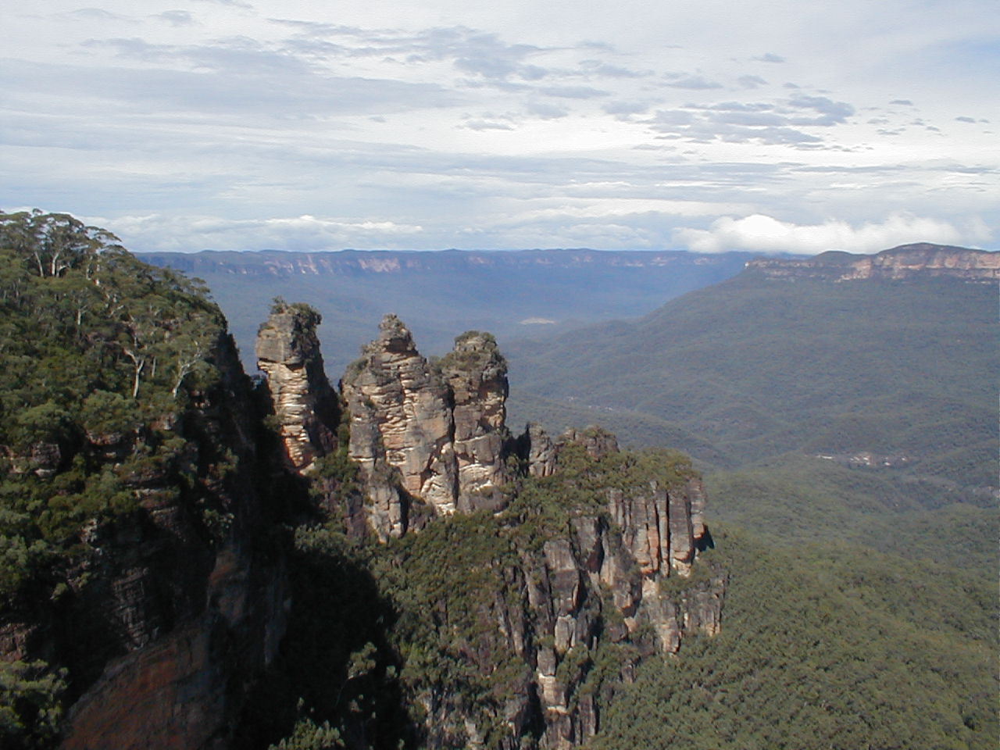

The Blue Mountains | ||||||||||
| Home | Acommodation | What's On | Eating | ||||||||||
|  | The Blue Mountains are a World Heritage-Listed site of stunning natural beauty. The gum trees, gorges, waterfalls, and walks are less than two hours from the center of Sydney and therefore provide the ideal day trip or weekend break. There is a wide variety of accomodation, from budget hostels to luxury guest houses, and a range of cafes, restaurants, and hotels that provide meals and drinks. While the Blue Mountains is a large area that encompasses many small towns and villages, the two most common areas are Katoomba and Leura. The area offers plenty of activities that you can enjoy, including canyoning, abseiling, and rock climbing. There are galleries and craft shops for those interested in arts. But the Blue Mountains are best known for their stunning views. |
|||||||||
|
Getting there
| ||||||||||